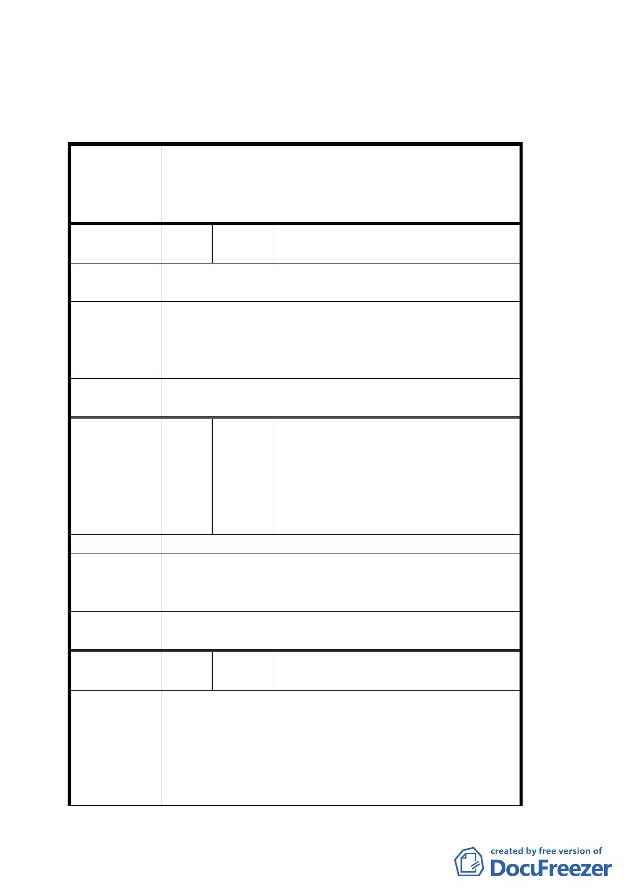

臺北市都市計畫委員會公民團體陳情意見綜理表
配合臺北市捷運系統內湖線工程變更沿線第三種住宅
案 名 區、第三之二種住宅區、科技工業區、公園用地為交
通用地及修訂西湖市場用地、交通用地（交十一）土
地使用管制暨劃定都市更新地區計畫案
編
號
１
陳情人
屈俊華 先生（台北市北安路 841 巷
14 號 2 樓）
陳情理由
劍潭古寺有三百五十年歷史為本社區歷史古蹟人文中
心。
1. 由既成道路開通至劍潭古寺以便香客、遊客往來。
建議辦法
2.
或由出口站高架人行陸橋直通劍潭寺。
新站建設應同時整體規劃本社區景觀，美化環境以
利觀光。
委員會決議
建議內容非屬都市計劃範疇，留供將來捷運站規劃時
參考。
鄭盛鴻 先生（台北市內湖路二段 336
巷 2 號 1 樓）
編
號２
陳情人
鄭志村 先生（台北市內湖路二段 336
巷 2 號 1 樓）
鄭茂松 先生（台北市內湖路二段 336
巷 2 之 1 號 7 樓）
陳情理由
1. 都市更新預設內湖捷運第二出口，請徵收建築物。
建 議 辦 法 2. 可否交換捷運內湖站第一出口旁邊ㄧ樓的建築物
土地。
委員會決議
有關劃定都市更新部份請捷運局再與土地所有權人協
調及研究可行方案
編
號３
陳情人
清白里辦公處 陳東源 里長（台北
市內湖區路星雲街 208 號）
1. 為增進捷運內湖站腹地人潮、通行疏散之便利與安
全，預為市民福祉做規劃與準備。
陳情理由
2.
為改善捷運內湖站 B6 出口住商環境，使捷運內湖
站腹地之建物，得以藉容積獎勵，更新站區附近之
市容觀瞻、公共安全、停車空間，以提升住商環境，
並符合行政計畫擬定之公平原則，減少地方對立衝
第 4 頁，共 9 頁